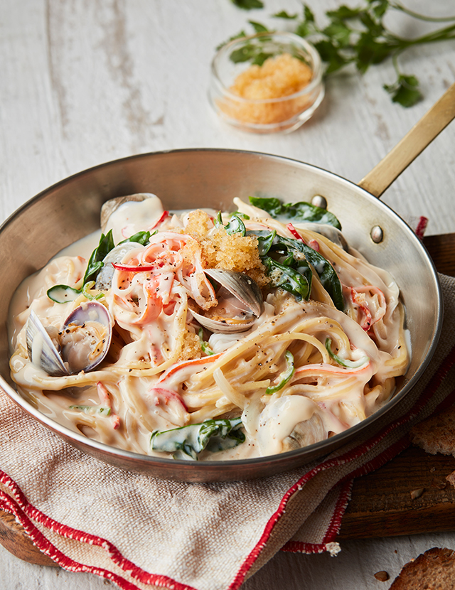

소불고기

이거하나면 밥한그릇 너무 쉽게 뚝딱 할 수 있죠! 너무나 맛있게 먹은 저희집 밥도둑 소불고기 레시피입니다^^
재료 순서
- 불고기용 소갈비살
- 양파
- 대파
- 팽이버섯
- 느타리버섯
- 설탕
- 물엿
- 매실액
- 다진마늘
- 간장
- 후추
- 참기름
조리 순서
- 소고기 등심에 설탕 4스푼, 물엿 2스푼을 넣어요.
- 거기에 매실액(저는 깔라마시 꿀로 대체) 다진마늘 3스푼, 간장 12스푼 후추 약간을 넣고 주물러 양념이 배게 해줍니다.
- 여기에 참기름 1스푼을 넣고 주물러 30분 기다려줘요.
- 기다리는 동안 야채와 버섯 손질도 샤샤샥^^
- 재워 둔 고기에 야채를 모두 넣고 참기름을 2스푼 더 첨가한 뒤 섞어주고 센 불에 구우면 끝!!
- 아아, 제가 했지만 너무 맛있어요 ㅠㅜ ㅎㅎㅎ 혹시라도 고기 냄새에 좀 민감하시면 청주나 맛술 한스푼 추가 추천해요~ 밥에 올려서 촵촵 정말 맛있게 먹었어요
크림파스타
예전에 크림파스타가 생각보다 만들기 쉽다고 들은 적이 있어서 이번 기회에 한번 만들어보기로 했어요. 진짜 간단해서 놀랬어요! 우리 같이 크림파스타 만들기 시작해보아요!
재료 순서
- 올리브유
- 베이컨
- 소금
- 흰우유
- 다진마늘
- 슬라이스 어니언
- 링귀니
- 체다치즈
- 후추
- 양송이버섯
- 버터
조리 순서
- 크림파스타를 만들기 위해 필요한 재료들을 알려드릴게요. 올리브유 약간, 파스타 건면 1인분, 베이컨 작은 거 4장, 체다치즈 2장, 소금 약간, 후추 약간, 흰우유 180ml, 양송이버섯 2개, 다진 마늘 한 스푼, 버터 한 숟갈, 채 썬 양파 적당량
- 먼저 베이컨을 먹기 좋은 크기로 잘라주세요. 양송이버섯도 씻어서 잘라주세요.
- 오늘 크림파스타는 1인분만 만들 거라 100원 동전 크기 정도의 크림파스타를 만들게요. 보기엔 양이 적어 보여도 면을 익히고 크림소스가 추가되면 양이 딱 좋을 것 같아요.
- 끓는 물에 소금을 약간 넣어서 팔팔 끓여주세요.
- 파스타 건면을 골고루 펼쳐 넣어주세요.
- 젓가락으로 면을 끓는 물 안으로 넣어서 2분 정도만 익혀주세요. 크림소스에 다시 면을 넣어서 같이 익혀줄 거라서 2분 정도가 적당해요!
- 끓는 물에서 2분 정도 익힌 파스타면을 채반에 옮겨주세요. ★이때!!!★ 찬물에 헹구시지 마시고 그냥 이대로 파스타면을 식혀주세요.
- 이제 크림파스타 소스를 만들 거예요! 달궈진 프라이팬에 올리브유를 적당히 넣고 다진 마늘을 넣고 볶아주세요.
- 채썬 양파와 베이컨이 잘 익을 때까지 볶아볶아줍니당!
- 그리고 흰우유 180ml를 넣고 보글보글 끓여주세요!
- 체다 치즈 2장을 넣어 크림파스타 소스를 진하게 만들어줍니다. 더욱 진한 크림파스타를 드시고 싶으시면 체다 치즈를 더 넣으셔도 좋아요!
- 체다 치즈가 잘 녹을 때까지 보글보글 계속 끓여줍니다. 크림소스를 끓일수록 색깔이 점점 진해져요! 그리고 중간에 크림소스 간을 보셔서 소금으로 간을 맞춰주세요. 저도 크림소스가 밍밍해서 소금을 조금씩 넣어가면서 간을 맞췄어요!
- 파스타면과 크림소스를 잘 섞어주세요. 걸쭉하게 드시고 싶으시면 오래 끓이시면 되고, 그냥 묽게 드시고 싶으시면 잠깐만 끓이셔서 바로 드시면 돼요! 저는 걸쭉한 크림파스타를 좋아하기 때문에 오래 끓여줄 거예용! 이쯤에서 그릇에 옮겨 담아줄게요.
- 완성된 크림파스타 위에 후추를 솔솔 뿌려주면 완성입니당! 양이 딱 적당한 것 같아요!
김치필라프
용도별로 폭넓게 식재료를 보관할 수 있는 4칸의 공간에 ±0.3℃ 신선정온으로 식재료와 김치를 신선하게 보관하는 LG 김치톡톡 NEW 유산균김치⁺ 모드로 맛있게 익은 김치로 간편하고 맛있는 김치필라프를 만들어보세요!
재료 순서
- 쌀
- 베이컨
- 양송이버섯
- 치킨스톡
- 굴솟,
- 물
- 김치
- 양파
- 마늘
- 버터
- 후추
조리 순서
- 쌀은 씻어 물을 부어 불려요.
- 김치, 베이컨, 양파, 버섯, 마늘은 큼직하게 다져요.
- 팬에 기름을 조금 두르고 양파, 버섯, 베이컨, 김치를 볶아내요.
- 팬에 버터를 녹이고 마늘을 넣어 마늘향이 올라오게 볶아요.
- 마늘이 익으면 불려 놓은 쌀을 넣어 볶아요.
- 볶아진 쌀에 물과 치킨 스톡을 넣어 쌀을 저어가며 밥을 지어요.
- 쌀이 익으면 볶아 놓았던 채소와 김치를 넣어요.
- 굴소스, 후추로 부족한 간을 하여 볶아 완성해요.